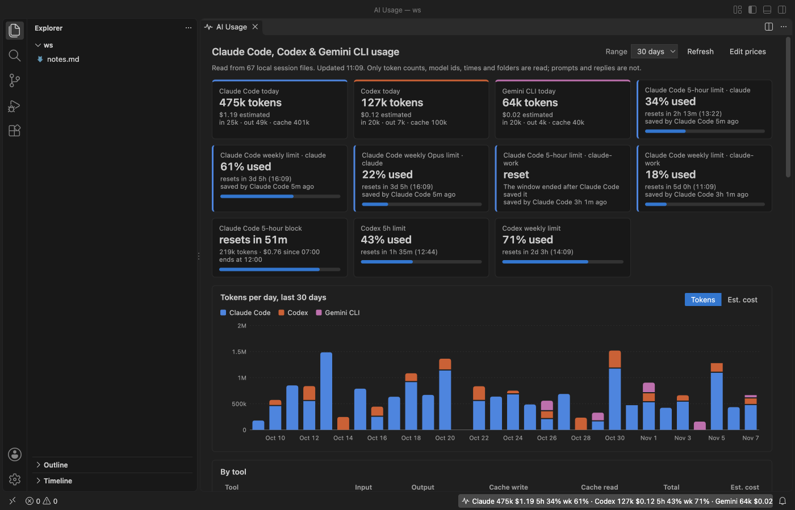

Open files in VS Code and Cursor / Developer files
Track Codex and Gemini CLI tokens and cost per day in VS Code
Codex and Gemini CLI write a session file for every chat on your computer, but neither shows a total per day. AI Usage Meter reads those files and the Claude Code ones, and shows today's tokens and estimated cost for each tool side by side in the VS Code status bar. Its dashboard adds the Codex limits, a bar chart per day for the last 7 to 90 days, and tables by tool, project folder, model and day. Zovo Pro (USD 19 once) adds a CSV export and a usage report for a month or period, with 3 free tries each.
Free, MIT license. Extension ID zovo.ai-usage-meter, version 0.3.1. Needs VS Code 1.90.0 or newer.

Steps in VS Code
- Install AI Usage Meter from the Marketplace, or press Ctrl+P (Cmd+P on macOS) and run
ext install zovo.ai-usage-meter. - Use Codex or Gemini CLI as usual. The meter finds
~/.codex/sessionsand~/.gemini/tmpby itself. - Read today's tokens and estimated cost for each tool in the status bar. Hover it for the split into input, output and cache tokens.
- Click the item, or run "AI Usage: Open Usage Dashboard", to open the dashboard.
- Pick 7, 14, 30 or 90 days in Range, and switch the chart between Tokens and Est. cost. Hover a day for its numbers.
- Scroll down for the tables by tool, project folder, model and day. Click "Edit prices" to change a price or add a model the table does not know.
Where Zovo Pro saves time
The status bar, the dashboard, the chart, the tables, the Codex limits and the price table are free. Nothing is sent anywhere, and no API key or account is needed. The meter remembers where it stopped in each file and reads only new lines.
For a client invoice or a team budget, the numbers have to go into a spreadsheet. Export Usage to CSV writes this month, last month or the last 7, 30 or 90 days as a CSV file, with one row per day, tool, Claude Code account, project folder and model, or one row per reply. Each row has input, output, cache write, cache read and total tokens and the estimated cost in US dollars. The other Pro tool writes a Markdown usage report for a month or period.
With Export Usage to CSV (Zovo Pro)
- Run "AI Usage: Export Usage to CSV (Pro)..." from the Command Palette.
- Pick the period and the row type, then where to save.
- A try counts only when the file was written. A period with no usage writes nothing and uses no try.
Export Usage to CSV works 3 times on your computer before it asks for a license, and a try counts only when you get a result. Opening a file shows no popup and no countdown.
Zovo Pro costs USD 19 once. It is not a subscription, and it turns on the Pro tools in every Zovo extension, not only AI Usage Meter. After a card payment (Stripe) your license key shows on the next page. In VS Code, run "Zovo Pro: Enter Zovo Pro license key" from the Command Palette and paste it. The key is checked on your computer, with no network call. With GitHub Sponsors, pick the "$19 one time" tier, then run "Zovo Pro: I already paid: unlock with GitHub Sponsors" and sign in with the same GitHub account. With PayPal, send USD 19 with "Zovo Pro" in the note and the key comes by email within a day.
A team of 5: USD 59 once, by card or by PayPal. Every rule and every Pro tool is on the Zovo Pro page.
Steps in Cursor, Windsurf or VSCodium
- Open the Extensions view with Ctrl+Shift+X (Cmd+Shift+X on macOS).
- Search for
zovo.ai-usage-meterand click Install. Cursor, Windsurf and VSCodium install from Open VSX, where it is published aszovo/ai-usage-meter. - If your editor has no gallery, download the .vsix from the Open VSX page and run "Extensions: Install from VSIX...".
- Then use it the same way as in VS Code.
What AI Usage Meter handles
- Codex session files in
~/.codex/sessionsor$CODEX_HOME/sessions, counted once even when Codex repeats its running totals. - Gemini CLI chats in
~/.gemini/tmp, with cached tokens shown as cache read and thinking tokens added to output. - Claude Code session files, including subagents, in every Claude Code config folder.
- Days in your computer's time zone.
What it does not do
- Cost is tokens times a price table. On a ChatGPT, Gemini, Pro or Max plan you are not billed per token, so treat it as what the same work would cost on the API.
- Gemini CLI does not write its quota to disk, so Gemini shows tokens and cost only, with no limit.
- Codex limits are only as fresh as the last Codex session that wrote them.
- OpenCode, Cursor and GitHub Copilot usage are not read.
Other options
- Codex /status. Inside a Codex session,
/statusshows the tokens of that session and your limits. It does not add up days. - Gemini CLI /stats. Inside a Gemini CLI session,
/statsshows the token use of that session only.
Install counts and Open VSX status were checked on 13 November 2026. Descriptions in quotes are the extensions' own.
Questions
Where do the Codex numbers come from?
From the token_count events Codex writes into its session files on your computer. Nothing is asked from OpenAI.
Can I turn off one tool?
Yes. aiUsageMeter.showCodex, aiUsageMeter.showGemini and aiUsageMeter.showClaudeCode hide a tool.
Is my prompt text read?
No. Only token counts, model ids, times and folder paths are used. Prompt and reply text is never shown or stored.
Does it work in Cursor or Windsurf?
Yes. Cursor, Windsurf and VSCodium install extensions from Open VSX. Search for the extension in their Extensions view and install it there.
More about AI Usage Meter
Read the AI Usage Meter page for every feature and setting, or the source code on GitHub.
Related guides
- Check your Claude Code 5-hour and weekly limit in VS Code
- Read a HAR file offline in VS Code
- Read your Claude Code history in VS Code
- Compare two folders in VS Code
Support this work
If this extension saves you time, you can support the work on GitHub Sponsors. Monthly tiers start at $5, and one-time tiers start at $15. Sponsorship is optional, and the tool works the same without it.
Need your format supported?
Open a format request with a sample file, and I reply there whether it can be done. For USD 299 once, through this GitHub Sponsors tier, I add your file format or a missing feature to this extension, with tests, within 7 days.